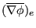
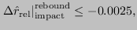
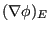
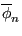
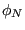
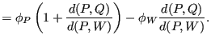

Keyword type: step
This procedure is used to calculate the response of a structure subject to dynamic loading using a direct integration procedure of the equations of motion. This card is also correct for transient incompressible flow calculations without heat transfer.
There are four optional parameters: DIRECT, ALPHA, EXPLICIT and SOLVER. The parameter DIRECT specifies that the user-defined initial time increment should not be changed. In case of no convergence with this increment size, the calculation stops with an error message. If this parameter is not set, the program will adapt the increment size depending on the rate of convergence. The parameter ALPHA takes an argument between -1/3 and 0. It controls the dissipation of the high frequency response: lower numbers lead to increased numerical damping ([54]). The default value is -0.05.
The parameter EXPLICIT can take the following values:
If the value is lacking, 3 is assumed. If the parameter is lacking altogether, a zero value is assumed.
The last parameter SOLVER determines the package used to solve the ensuing system of equations. The following solvers can be selected:
Default is the first solver which has been installed of the following list: SGI, PARDISO, SPOOLES and TAUCS. If none is installed, the default is the iterative solver, which comes with the CalculiX package.
The SGI solver should by now be considered as outdated. SPOOLES is very fast, but has no
out-of-core capability: the size of systems you can solve is limited by your
RAM memory. With 2GB of RAM you can solve up to 250,000 equations. TAUCS is
also good, but my experience is limited to the  decomposition, which
only applies to positive definite systems. It has an out-of-core capability
and also offers a
decomposition, which
only applies to positive definite systems. It has an out-of-core capability
and also offers a  decomposition, however, I was not able to run either of
them so far. Next comes the iterative solver. If SOLVER=ITERATIVE SCALING is
selected, the pre-conditioning is limited to a scaling of the diagonal terms,
SOLVER=ITERATIVE CHOLESKY triggers Incomplete Cholesky
pre-conditioning. Cholesky pre-conditioning leads to a better convergence and
maybe to shorter execution times, however, it requires additional storage
roughly corresponding to the non-zeros in the matrix. If you are short of
memory, diagonal scaling might be your last resort. The iterative methods
perform well for truly three-dimensional structures. For instance,
calculations for a hemisphere were about nine times faster with the ITERATIVE
SCALING solver, and three times faster with the ITERATIVE CHOLESKY solver than
with SPOOLES. For two-dimensional structures such as plates or shells, the
performance might break down drastically and convergence often requires the
use of Cholesky pre-conditioning. SPOOLES (and any of the other direct solvers)
performs well in most situations with emphasis on slender structures but
requires much more storage than the iterative solver. PARDISO is the Intel proprietary solver and is to my knowledge
presently the fastest.
decomposition, however, I was not able to run either of
them so far. Next comes the iterative solver. If SOLVER=ITERATIVE SCALING is
selected, the pre-conditioning is limited to a scaling of the diagonal terms,
SOLVER=ITERATIVE CHOLESKY triggers Incomplete Cholesky
pre-conditioning. Cholesky pre-conditioning leads to a better convergence and
maybe to shorter execution times, however, it requires additional storage
roughly corresponding to the non-zeros in the matrix. If you are short of
memory, diagonal scaling might be your last resort. The iterative methods
perform well for truly three-dimensional structures. For instance,
calculations for a hemisphere were about nine times faster with the ITERATIVE
SCALING solver, and three times faster with the ITERATIVE CHOLESKY solver than
with SPOOLES. For two-dimensional structures such as plates or shells, the
performance might break down drastically and convergence often requires the
use of Cholesky pre-conditioning. SPOOLES (and any of the other direct solvers)
performs well in most situations with emphasis on slender structures but
requires much more storage than the iterative solver. PARDISO is the Intel proprietary solver and is to my knowledge
presently the fastest.
In a dynamic step, loads are by default applied by their full strength at the start of the step. Other loading patterns can be defined by an *AMPLITUDE card.
First line:
Examples: *DYNAMIC,DIRECT,EXPLICIT 1.E-7,1.E-5
defines an explicit dynamic procedure with fixed time increment  for a step of length .
*DYNAMIC,ALPHA=-0.3,SOLVER=ITERATIVE CHOLESKY 1.E-7,1.E-5,1.E-9,1.E-6
defines an implicit dynamic procedure with variable increment size. The numerical damping was increased (  instead of the default , and the iterative solver with Cholesky pre-conditioning was selected. The starting increment has a size , the subsequent increments should not have a size smaller than  or bigger than . The step size is .
Example files: beamnldy, beamnldye, beamnldyp, beamnldype.